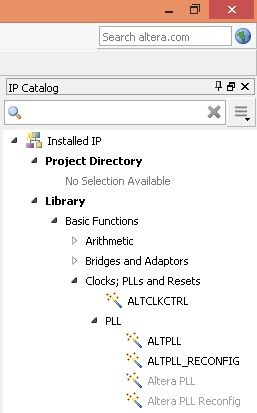

We are FPGA engineers located in Enschede, The Netherlands.
In this tutorial we'll be programming the Terasic DE0-Nano FPGA development board using the functional hardware description language CλaSH. The end result of this tutorial is demonstrated in the video below:
This tutorial is not a general introduction to CλaSH, nor to programming FPGAs.
It is meant to demonstrate how to use of TopEntity annotations (added in version 0.5.5 of CλaSH) to configure your CλaSH designs for an FPGA, without writing a single line of VHDL or (System)Verilog.
Even then, this tutorial is already almost too long for single blog post, but here goes:
This tutorial used to be specified in terms of
.topentityfiles, a method which is now superseded byTopEntityannotions. You can still see the old version on github
We start with some general information about the DE0-Nano board:
1 on the FPGA pin connected to the LED.0 when they are pressed, and 1 when they are not.The circuit that we are making will repeatedly do one of two things:
We switch between these two modes when the KEY1 button on the board is pressed and subsequently released.
We reset the circuit by pressing the KEY0 button.
The Blinker.hs file given below implements the behaviour of circuit (sans reset behaviour) we just described.
As the clock is running at 50 MHz, we shouldn't update the state of the LEDs every clock cycle, as they will just seem to to all be turned on all the time to the human eye.
We hence use a counter that counts up to a certain amount of clock cycles, and only update the state of the LEDs when the desired number of cycles is reached and the count is reset.
blinker.hs:
module Blinker where import CLaSH.Prelude {-# ANN topEntity (defTop { t_name = "blinker" , t_inputs = ["KEY1"] , t_outputs = ["LED"] , t_extraIn = [ ("CLOCK_50", 1) , ("KEY0" , 1) ] , t_clocks = [ (altpll "altpll50" "CLOCK_50(0)" "not KEY0(0)") ] }) #-} topEntity :: Signal Bit -> Signal (BitVector 8) topEntity key1 = leds where key1R = isRising 1 key1 leds = mealy blinkerT (1,False,0) key1R blinkerT (leds,mode,cntr) key1R = ((leds',mode',cntr'),leds) where -- clock frequency = 50e6 (50 MHz) -- led update rate = 333e-3 (every 333ms) cnt_max = 16650000 -- 50e6 * 333e-3 cntr' | cntr == cnt_max = 0 | otherwise = cntr + 1 mode' | key1R = not mode | otherwise = mode leds' | cntr == 0 = if mode then complement leds else rotateL leds 1 | otherwise = leds
TopEntity annotationsNow that we've created our CλaSH design, it's time to move on to the important part of this tutorial, elaboration of the TopEntity annotation.
The TopEntity is a Haskell data type that guides the CλaSH compiler in generating port names and setting up clocks.
These annotations are applied using the ANN pragma:
{-# ANN foo (TopEntity {t_name = .., .., ..}) #-}
In our example, we extend the minimalist defTop annotation with:
t_name: the name our component should have. In our case: blinkert_inputs: a list of names our inputs should have. In our case: KEY1t_outputs: a list of names our outputs should have. In our case: LEDt_extraIn: a list of extra inputs that do not correspond to the arguments of our topEntity function.
These extra inputs are always bit vectors.
Every item in the extra_in list is a tuple (encoded as a 2-element list) of a name, and the number of bits for that input.
In our case we add an extra 1-bit input CLOCK_50 which will correspond to the pin to which the 50MHz crystal is attached, and a 1-bit input KEY0 which is the button we will use as a reset.t_clocks: a list of clock sources.We create a single clock source by instantiating the default template for the Altera PPL component altpll for the Cyclone IV. The first argument of this function is the name, the second an expression corresponding to the clock pin to connect, and the third the expression corresponding to the reset pin to connect. So to elaborate the arguments in order:
name: the name of the component generating our clock. In our case "altpll50", an instantiated PLL component we will create later on in this tutorial.clock port: Now, I lied a bit that we didn't have to write any VHDL or SystemVerilog.
As you can see, we connect the clock port to the expression CLOCK_50(0), which is a VHDL expression.
The altpll50s clock port expects a single bit, but our CLOCK_50 port is a 1-bit vector.
Hence we need to select the first (and only) bit: "CLOCK_50(0)".reset port: Again, we have to write some VHDL: not KEY0(0).
Remember that our extra inputs are bit vectors, but the reset port expects a single bit.
Hence we need to select the first (and only) bit: KEY0(0).
Additionally, remember that the keys are 0 when they are pressed, but the reset port expects an active-high signal.
Hence we need to negate the signal: "not KEY0(0)".Now it's time to generate some VHDL, yay!
Make sure that the Blinker.hs file is in your current working directory, and then run the CλaSH compiler to generate VHDL:
clash --vhdl Blinker.hs
This will create a ./vhdl/Blinker/ directory, of which, for this tutorial, the most interesting file is within that directory is:
blinker.vhdl:
-- Automatically generated VHDL library IEEE; use IEEE.STD_LOGIC_1164.ALL; use IEEE.NUMERIC_STD.ALL; use IEEE.MATH_REAL.ALL; use work.all; use work.types.all; entity blinker is port(KEY1 : in std_logic_vector(0 downto 0); CLOCK_50 : in std_logic_vector(0 downto 0); KEY0 : in std_logic_vector(0 downto 0); LED : out std_logic_vector(7 downto 0)); end; architecture structural of blinker is signal system1000 : std_logic; signal system1000_rstn : std_logic; signal altpll50_locked : std_logic; begin altpll50_inst : entity altpll50 port map (inclk0 => CLOCK_50(0) ,c0 => system1000 ,areset => not KEY0(0) ,locked => altpll50_locked); -- reset system1000_rstn is asynchronously asserted, -- but synchronously de-asserted resetSync_n_0 : block signal n_1 : std_logic; signal n_2 : std_logic; begin process(system1000,altpll50_locked) begin if altpll50_locked = '0' then n_1 <= '0'; n_2 <= '0'; elsif rising_edge(system1000) then n_1 <= '1'; n_2 <= n_1; end if; end process; system1000_rstn <= n_2; end block; topEntity_0_inst : entity topEntity_0 port map (key1_i1 => KEY1 ,system1000 => system1000 ,system1000_rstn => system1000_rstn ,topLet_o => LED); end;
It's almost time to start programming our FPGA.
But first we need to setup how the component ports are connected to the right pins on the FPGA.
For this we will use the DE0_Nano_SystemBuilder which you can find on the DE0-Nano CD-ROM.
This will create both a pin/port map file, and a Quartus II project file.
Note that I work on OS X, so both DE0_Nano_SystemBuilder and Quartus II are running inside a VirtualBox VM running Windows 8.
In DE0_Nano_SystemBuilder, call the project blinker, and ensure that only CLOCK, Button x 2, and LED x 8 are selected.
Then press the Generate button, this will open a save dialog window: select a location where you want to create the project and hit the save button.
You can now close DE0_Nano_SystemBuilder.
In the directory to which you saved the project you will find the files:
blinker.htmblinker.qpfblinker.qsfblinker.sdcblinker.vYou can delete blinker.v as we will be using our blinker.vhdl.
The port/pin mappings that are generated by DE0_Nano_SystemBuilder do not completely correspond to our port names.
We will hence need to update the mapping file blinker.qsf:
CLOCK_50 by CLOCK_50[0]KEY[0] by KEY0[0]KEY[1] by KEY1[0]The final blinker.qsf file will look like:
#============================================================ # Build by Terasic System Builder #============================================================ set_global_assignment -name FAMILY "Cyclone IV E" set_global_assignment -name DEVICE EP4CE22F17C6 set_global_assignment -name TOP_LEVEL_ENTITY "blinker" set_global_assignment -name ORIGINAL_QUARTUS_VERSION "12.0" set_global_assignment -name LAST_QUARTUS_VERSION "12.0" set_global_assignment -name PROJECT_CREATION_TIME_DATE "12:43:02 MAY 01,2015" set_global_assignment -name DEVICE_FILTER_PACKAGE FBGA set_global_assignment -name DEVICE_FILTER_PIN_COUNT 256 set_global_assignment -name DEVICE_FILTER_SPEED_GRADE 6 set_global_assignment -name SDC_FILE blinker.SDC #============================================================ # CLOCK #============================================================ set_location_assignment PIN_R8 -to CLOCK_50[0] set_instance_assignment -name IO_STANDARD "3.3-V LVTTL" -to CLOCK_50[0] #============================================================ # LED #============================================================ set_location_assignment PIN_A15 -to LED[0] set_instance_assignment -name IO_STANDARD "3.3-V LVTTL" -to LED[0] set_location_assignment PIN_A13 -to LED[1] set_instance_assignment -name IO_STANDARD "3.3-V LVTTL" -to LED[1] set_location_assignment PIN_B13 -to LED[2] set_instance_assignment -name IO_STANDARD "3.3-V LVTTL" -to LED[2] set_location_assignment PIN_A11 -to LED[3] set_instance_assignment -name IO_STANDARD "3.3-V LVTTL" -to LED[3] set_location_assignment PIN_D1 -to LED[4] set_instance_assignment -name IO_STANDARD "3.3-V LVTTL" -to LED[4] set_location_assignment PIN_F3 -to LED[5] set_instance_assignment -name IO_STANDARD "3.3-V LVTTL" -to LED[5] set_location_assignment PIN_B1 -to LED[6] set_instance_assignment -name IO_STANDARD "3.3-V LVTTL" -to LED[6] set_location_assignment PIN_L3 -to LED[7] set_instance_assignment -name IO_STANDARD "3.3-V LVTTL" -to LED[7] #============================================================ # KEY #============================================================ set_location_assignment PIN_J15 -to KEY0[0] set_instance_assignment -name IO_STANDARD "3.3-V LVTTL" -to KEY0[0] set_location_assignment PIN_E1 -to KEY1[0] set_instance_assignment -name IO_STANDARD "3.3-V LVTTL" -to KEY1[0] #============================================================ # End of pin assignments by Terasic System Builder #============================================================
Also, since we will be using the PLL for clocks, you can replace the entire contents of blinker.sdc by:
derive_pll_clocks
We now open the blinker.qpf file in Quartus II.
For this tutorial, I will be using version 14.1 of the Quartus II software.
The first thing we will do is add the VHDL files generated by CλaSH to our design.
In the menu bar, go to, Project -> Add/Remove Files in Project..., press the ... button next to File name, in the load dialog, select all the files generated by clash, and press Open.
Then press OK to close the Settings dialog.
Next we will create a PLL component.
On the right of the Quartus II main window you will see the IP Catalog.
Go to Installed IP > Library > Basic Functions > Clocks; PLLs and Resets > PLL, and double click on ALTPLL.

This opens a dialog called Save IP Variation, at the end of the line enter altpll50 and press OK.

This opens the MegaWizard dialog for the PLL.
Change What is the frequency of the inclk0 input? to 50.000.
Then press Finish twice.
This closes the MegaWizard dialog, and opens a new dialog asking if you want to add this IP block to your project.
We want this, so select 'Yes'.
Finally, we're finished with configuration, and we can start creating the configuration file for the FPGA. In the menu bar, click: 'Processing -> Start Compilation'. In my extremely slow VM this compilation/synthesis process will take a while, if but might be much faster on your machine.
After synthesis has finished, it is time to program our FPGA board.
Connect the FPGA board to a USB port, and start the programmer from the menu bar: Tools -> Programmer.
Press the Start button on the left to program your FPGA and wait until the progress bar says 100% (Successful).

Your FPGA should now be fully configured with the CλaSH generated design for you to play with. So yeah, go press those buttons!
This ends the tutorial on the use of TopEntity annotations to program your FPGA devices with CλaSH designs.
I hope you got the gist of it.
If/When I get my hands on a Xilinx FPGA board, I hope to make an alternate version of this tutorial, but then use Xilinx' ISE/Vivado tool-flow instead.


Institutenweg 25A
7521 PH Enschede
The Netherlands
Mail us on info@qbaylogic.com

We apply FPGA technology in domains with difficult mathematical problems, where solutions need low latencies and high performance.

We have developed CλaSH, a functional hardware description language, providing unprecedented abstraction mechanisms for FPGA design.

Our workshops and training are based on 30+ years of experience in teaching students at bachelor, master, and phd level.